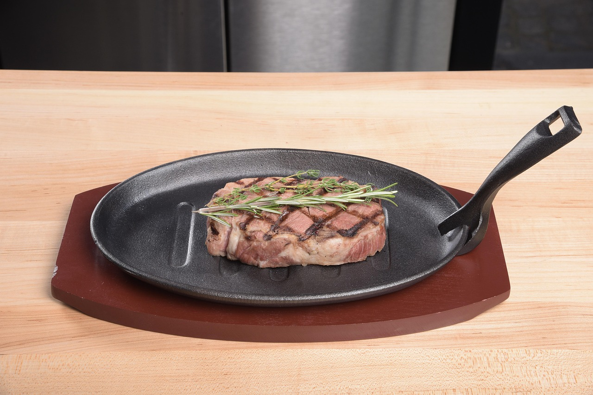

Pan Seared Steak

Pan-Seared Steak with Garlic Butter
This Pan-Seared Steak has a garlic rosemary-infused butter that makes it taste steakhouse quality. You’ll be impressed at how easy it is to make the perfect steak – seared and caramelized on the outside, and so juicy inside.
This 20-minute recipe is done on the stovetop in one pan (no need to finish it in the oven). This is one of our favorite steak recipes and we make it year-round because it’s such a quick and convenient cooking method.
Ingredients:
- 2 lbs Top Sirloin Steaks (2 steaks).
- 1 tsp black pepper, freshly ground.
- 1/2 Tbsp vegetable oil, or any high heat cooking oil.
- 1 1/2 tsp sea salt.
- 2 Tbsp unsalted butter.
- 2 cloves garlic, peeled and quartered.
- 1 sprig fresh rosemary.
Steps:
- Thoroughly pat steak dry with paper towels. Just before cooking, generously season with 1 1/2 tsp salt and 1 tsp black pepper.
- Heat the cast iron pan until hot then add 1/2 Tbsp oil over medium-high heat, swirling to coat. Once the oil is very hot, add steaks to the skillet. Sear the steaks on the first side for 4 minutes until a brown crust has formed then flip and cook another 3-4 minutes. Using tongs, turn the steak on its sides to render the white fat and sear the edges (1-minute per edge).
- Reduce heat to medium and immediately add 2 Tbsp butter, quartered garlic cloves and rosemary to the pan. Spoon the butter sauce over the steak, tilting the pan to get butter on your spoon. Continue spooning the sauce over the steak for a minute or until the steak is about 5-10 degrees from your desired doneness (the temperature will continue to rise another 5-19 degrees while steaks rest).
- Transfer steak to a cutting board, loosely cover and rest 10 minutes before slicing into 1/2" strips to serve. Spoon extra butter sauce over sliced steak to serve.
Home